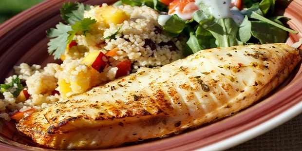
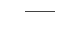
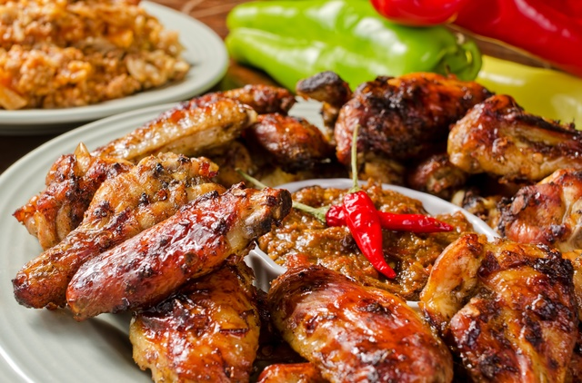

Starters Butcher’s Board selection of local cheeses and artisan salumes Spinach Dip aged white cheddar, bloomsdale spinach, sundried tomatoes Town Dock Calamari buttermilk battered with chili aioli and house cocktail sauce Oysters today’s fresh selection with mignonette and cocktail sauce Seafood Platter fresh local oysters, wild white prawns, fresh maine lobster, house smoked salmon spread, served on ice soups and salads Wild Mushroom Soup vegetarian with cream, six types of mushrooms Roasted Butternut Squash Soup garnished with sonoma sage pesto Kale Caesar Salad baby kale, parmesan cheese, wild white anchovies, house caesar dressing, croutons Butter Lettuce Salad pt. reyes blue cheese, candied walnuts, apples, maple vinaigrette / add grilled prawns fresh seafood Fish Tacos handmade flour tortillas, chili aioli, blistered tomatoes, arugula all natural steaks Chimichurri Steak mesquite grilled hanger steak, sliced, housemade chimichurri sauce, fries Prime New York Steak pt. reyes blue cheese butter, sautéed seasonal vegetables Marinated Skirt Steak all natural, hand-cut meat served with seasonal sides Hoisin Marinated Pork Chop double cut, sauteed brussel sprouts, warm bacon vinaigrette Blackened Ribeye hand-cut and grilled, housemade mashed potatoes classics Braised Short Ribs mashed potatoes, horseradish cream, beef jus Cedar Plank Salmon shallots and bacon, organic bloomsdale spinach, crimini mushroom jus burgers and sandwiches Bistro Burger fresh ground natural angus served with black pepper aioli Three Mushroom Burger vegetarian mushroom patty, arugula, fresh pesto aioli French Dip natural roast beef, horseradish cream, house au jus, fresh baked roll sides Mac & Cheese baked with crispy la quercia prosciutto French Fries / Sweet Potato Fries |
 | |